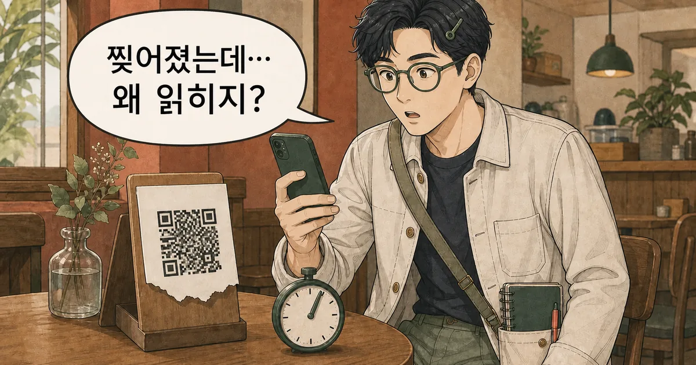
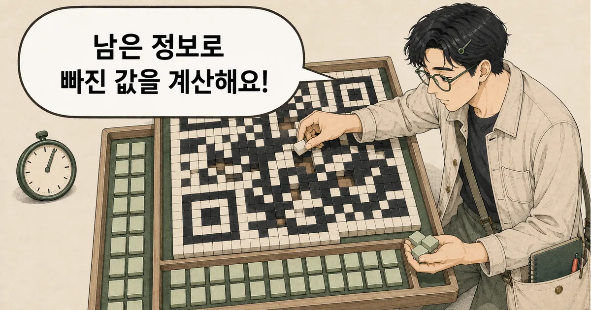
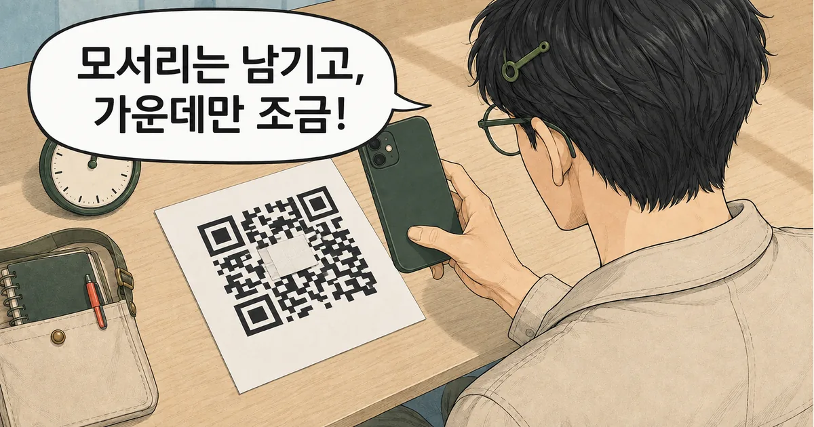
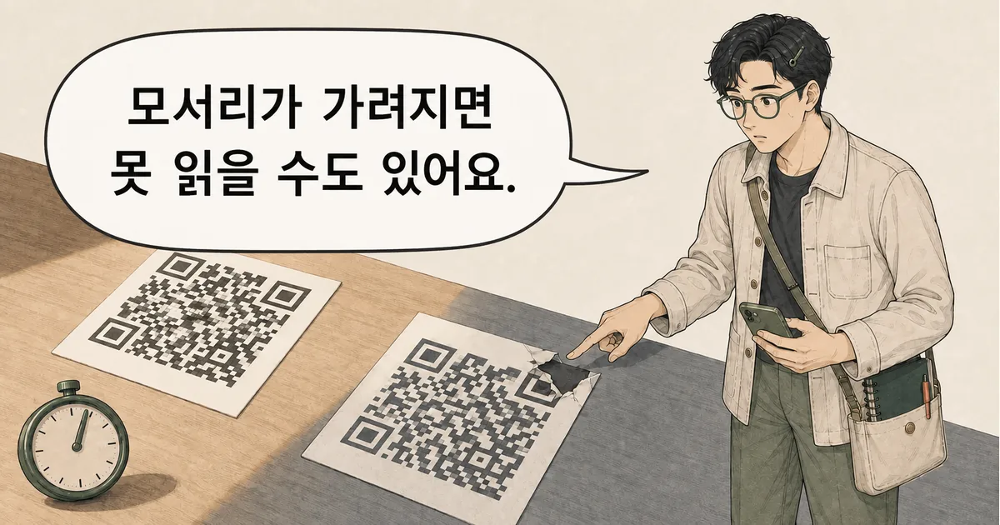

카페 테이블의 QR코드가 찢어지고 커피 얼룩까지 묻었는데도 메뉴가 열릴 때가 있다. 검은 칸 하나하나가 주소라면 일부가 사라진 순간 읽지 못해야 할 것 같다. QR코드는 원래 데이터와 함께 복구용 여분 정보를 넣어 두기 때문에 제한된 손상은 계산으로 되살릴 수 있다. 독자는 새 테스트 QR코드로 이 범위를 1분 안에 확인할 수 있다. 그렇다면 왜 작은 모서리 손상은 큰 중앙 얼룩보다 더 치명적일 수 있을까?
궁금한 IT 원리
30초 요약
- QR코드는 데이터와 오류 정정용 여분 정보를 함께 담아 일부 손상을 계산으로 복원한다.
- 새 테스트 QR코드 중앙을 조금 가리면 복원이 작동하는 장면을 1분 안에 확인할 수 있다.
- 최대 30%라는 수치는 임의의 면적 보증이 아니며 모서리 위치 표시 손상은 더 빨리 실패한다.
먼저 알아둘 말
- 모듈
- QR코드를 이루는 검은색 또는 흰색 정사각형 한 칸이다.
- 코드워드
- QR코드가 데이터와 복구 정보를 다룰 때 사용하는 8비트짜리 묶음이다.
- 오류 정정
- 읽은 값 일부가 틀리거나 사라져도 여분 정보의 관계로 원래 값을 되살리는 방법이다.
- 위치 표시 무늬
- QR코드 세 모서리의 큰 네모로, 카메라가 코드의 위치와 방향을 찾는 기준이다.
원리를 쉽게 풀어보면
QR코드는 데이터 코드워드에 오류 정정 코드워드를 더하고 세 모서리의 위치 표시 무늬로 격자를 찾아 제한된 오염과 손상에서도 원래 내용을 복원한다.
QR코드는 손상된 칸을 추측하지 않고 계산해 복원한다
QR코드는 원래 내용을 담은 코드워드와 오류 정정용 코드워드를 함께 저장한다. 일부가 손상돼도 남은 값의 관계를 계산해 빠진 값을 되살릴 수 있다. 휴대폰이 주소를 문맥으로 추측하거나 비슷한 QR코드를 인터넷에서 찾는 방식은 아니다.

검은 칸에는 내용과 여분 답안이 함께 들어간다
검은색과 흰색 한 칸은 모듈이라고 부른다. QR코드는 글자와 주소를 비트로 바꾸고, 이를 8비트짜리 코드워드 묶음으로 만든다. 여기에 원래 내용에서 계산한 오류 정정 코드워드를 더해 같은 격자에 섞어 놓는다.

1분 확인은 새 테스트 QR코드로만 한다
식당 결제판이나 출입증을 훼손해서 시험하면 안 된다. 개인정보·로그인·결제와 무관한 짧은 문구로 새 테스트 QR코드를 만들고, 인쇄한 종이 위에 떼기 쉬운 작은 메모지를 올리면 된다. 이미지 속 QR 무늬는 설명용이라 실제 실험에는 쓰지 않는다.

- 개인정보나 결제가 아닌 짧은 문구로 새 테스트 QR코드를 만든다.
- 아무것도 가리지 않은 원본이 먼저 읽히는지 확인한다.
- 세 모서리의 큰 위치 표시를 남기고 중앙 몇 칸만 작은 종이로 가린다.
- 다시 스캔한 뒤 가린 위치와 크기를 바꿔 결과를 비교한다.
작게 가린 상태가 읽히면 종이를 조금 옮겨 다시 시험한다. 어느 순간 실패하더라도 그 비율을 모든 QR코드의 한계로 일반화하면 안 된다. QR 버전과 오류 정정 수준, 데이터 길이, 손상 위치, 인쇄 대비, 빛 반사, 카메라 초점이 모두 결과에 영향을 준다.
모서리 세 곳은 복원보다 먼저 길을 찾는다
QR코드 세 모서리의 큰 네모는 위치 표시 무늬다. 휴대폰은 이 모양을 찾아 코드가 화면 어디에 있고 얼마나 기울었는지 판단한다. 그다음 작은 칸의 격자를 맞춰 데이터를 읽는다. 출발점을 못 찾으면 복구 계산에 넣을 칸 자체를 안정적으로 모으기 어렵다.
코드 둘레의 흰 여백도 배경과 QR코드를 나누는 데 중요하다. 어두운 무늬를 바짝 붙이거나 투명 테이프가 빛을 반사하면 검은 칸이 온전히 남아도 인식이 느려질 수 있다. 손상 면적만 재지 말고 모서리·여백·대비를 먼저 봐야 한다.

더 깊게 보면 오류 정정은 여분 답안을 만든다
여분 정보는 원문을 통째로 한 번 더 넣은 복사본이 아니다. 여러 원래 값 사이의 계산 관계를 담은 답안에 가깝다. 몇 조각이 틀려도 남은 데이터와 여분 답안이 충분하면 판독기는 어떤 값이 어긋났는지 찾고 원래 코드워드를 복원한다.
QR코드 규격은 오류 정정 수준을 L·M·Q·H 네 단계로 둔다. 높은 수준은 복구용 코드워드를 더 많이 넣는 대신 같은 크기에 담을 수 있는 데이터가 줄어든다. 그래서 작은 QR코드에 긴 주소와 높은 복원력을 동시에 요구하면 칸이 더 촘촘해지거나 코드 크기가 커진다.
QR코드는 리드 솔로몬이라는 오류 정정 방식을 쓴다. 생성할 때 데이터 코드워드로 여분 코드워드를 계산한다. 읽을 때는 남은 값에서 불일치 신호를 구하고, 틀린 코드워드의 위치와 값을 찾아 고친다. 공개 디코더 ZXing도 데이터 블록마다 이 복원 단계를 수행한다.
DENSO WAVE의 규격 요약은 L·M·Q·H 수준에서 대략 7%·15%·25%·30%의 코드워드를 복원할 수 있다고 설명한다. 여기서 중요한 단어는 코드워드다. 사진에서 보이는 검은 면적을 자로 재어 같은 비율만큼 마음대로 가려도 된다는 뜻이 아니다.
| 수준 | 복원 가능한 코드워드 대략값 | 같은 크기에서의 대가 |
|---|---|---|
| L | 약 7% | 데이터를 더 많이 담기 쉬움 |
| M | 약 15% | 일반적인 균형 |
| Q | 약 25% | 복구 정보가 늘어남 |
| H | 약 30% | 데이터 공간이 가장 많이 줄어듦 |
복원력이 필요하면 높은 수준을 고르되, 로고를 크게 덮어도 안전하다고 생각해서는 안 된다. 생성 뒤 실제 인쇄 크기와 조명, 여러 휴대폰에서 읽어 보고 원본 주소도 눈으로 확인한다. 중요한 결제·출입 링크라면 손상에 기대지 말고 깨끗한 코드를 다시 제공하는 편이 안전하다.
읽히는 QR코드는 네 가지를 함께 지킨다
첫째, 세 모서리의 위치 표시를 가리지 않는다. 둘째, 코드 둘레의 흰 여백을 남긴다. 셋째, 배경과 검은 칸의 대비를 높이고 반사를 피한다. 넷째, 내용 길이와 사용 환경에 맞는 오류 정정 수준을 선택한 뒤 실제 크기로 시험한다.
- 인쇄물이 접혔다면 먼저 세 모서리 위치 표시와 흰 여백을 편다.
- 카메라가 흐리면 거리를 바꾸고 반사광이 없는 각도로 다시 비춘다.
- 중요한 링크는 QR코드만 믿지 않고 사람이 읽을 짧은 주소도 함께 둔다.
- 새로 만들 때는 목표 오류 정정 수준을 정하고 실제 기기 여러 대로 시험한다.
새 테스트 QR코드 중앙은 읽힐 수 있지만 모서리 위치 표시나 복원 한도를 넘는 손상은 실패할 수 있다고 설명하면 확인이 끝났다. QR코드의 끈기는 카메라의 추측이 아니라, 처음부터 함께 심어 둔 여분 답안과 위치 기준에서 나온다.
QR코드는 사라진 그림을 상상하지 않는다. 남은 코드워드와 여분 답안으로 빠진 값을 계산한다.
참고한 자료
- ISO/IEC 18004:2024 QR code bar code symbology specification공식
- What is a QR Code? - DENSO WAVE공식
- QR Code Standardization and Outline Specification - DENSO WAVE공식
- ZXing QR Decoder and Reed-Solomon error correction implementation공식 문서
- Error Correction Coding - Thonky QR Code Tutorial독립 자료
- Module Placement in Matrix - Thonky QR Code Tutorial참고 자료
QR코드는 검은 칸을 눈대중으로 짐작하지 않는다. 위치 표시로 격자를 잡고, 남은 코드워드와 오류 정정 코드워드의 관계를 계산해 빠진 값을 복원한다. 다만 수준별 복원률은 손상 면적 보증서가 아니다. 새 테스트 QR코드 중앙은 읽히지만 모서리 위치 표시를 가리면 실패할 수 있다고 설명하면 원리를 제대로 구분한 것이다. 새 테스트 QR코드 하나를 원본 상태와 중앙 일부 가림 상태로 차례로 읽고, 세 모서리 위치 표시는 건드리지 않은 채 결과를 비교한다.